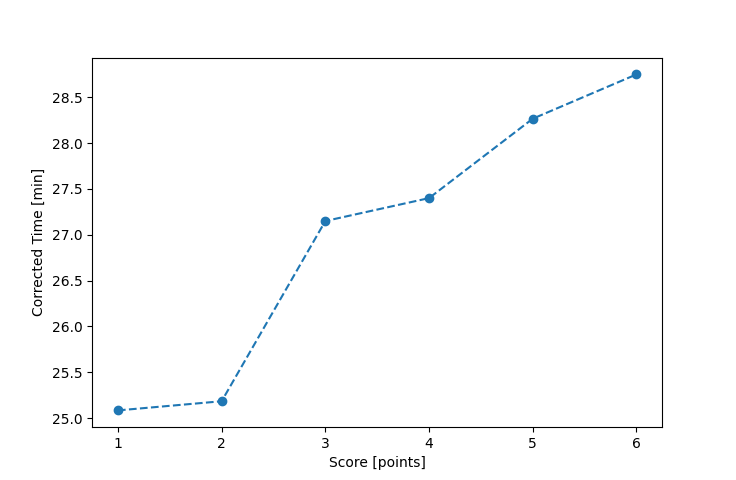

| Wind: | 2-3 (BFT) |
|---|---|
| RC: | Barry_O |
| Date: | September 10, 2017 |
| Notes: | M2 180 |
| Rank / Score | Name | Boat | Input Time [mm:ss] | Input Offset [mm:ss] | Race Time [mm:ss] | Race Time [s] | Handicap | Corrected Time [s] | Corrected Time [mm:ss] |
|---|---|---|---|---|---|---|---|---|---|
| 1.0 | Rod_H | PUF | 28:03 | 00:00 | 28:03 | 1683 | 1.11800 | 1505 | 25:05 |
| 2.0 | Ron_F | F5 | 24:20 | 00:00 | 24:20 | 1460 | 0.96600 | 1511 | 25:11 |
| 3.0 | Mike_F | SF | 27:16 | 00:00 | 27:16 | 1636 | 1.00400 | 1629 | 27:09 |
| 4.0 | Bill_P | SF | 27:31 | 00:00 | 27:31 | 1651 | 1.00400 | 1644 | 27:24 |
| 5.0 | Xavier | SWSX | 27:06 | 00:00 | 27:06 | 1626 | 0.95900 | 1696 | 28:16 |
| 6.0 | Lewis_V | BCN | 25:01 | 00:00 | 25:01 | 1501 | 0.87000 | 1725 | 28:45 |

Application Notes:
All race results are unofficial
View source code at https://github.com/cessnao3/portsmouthracecalc/